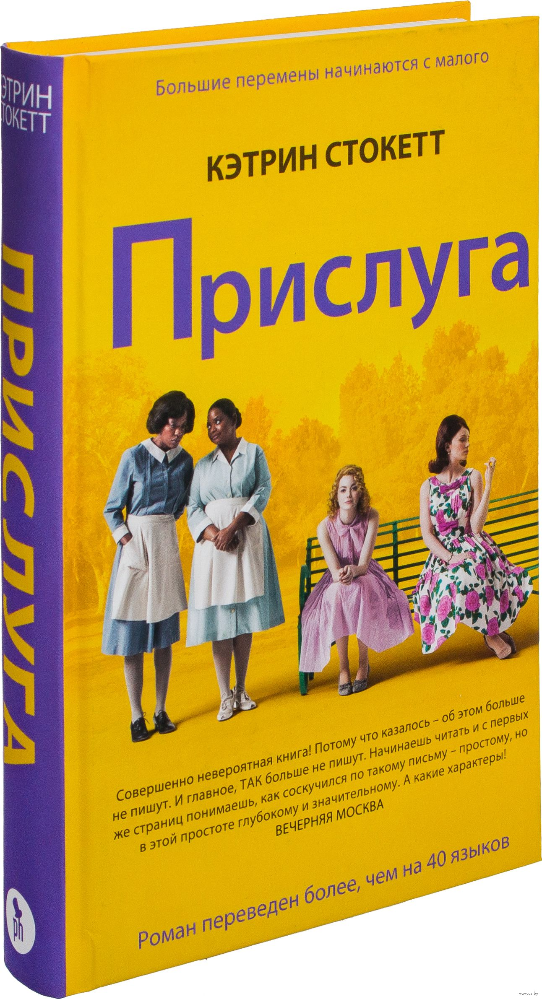
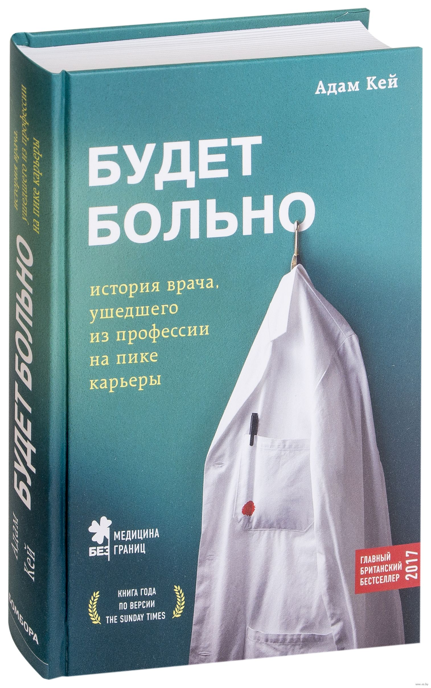
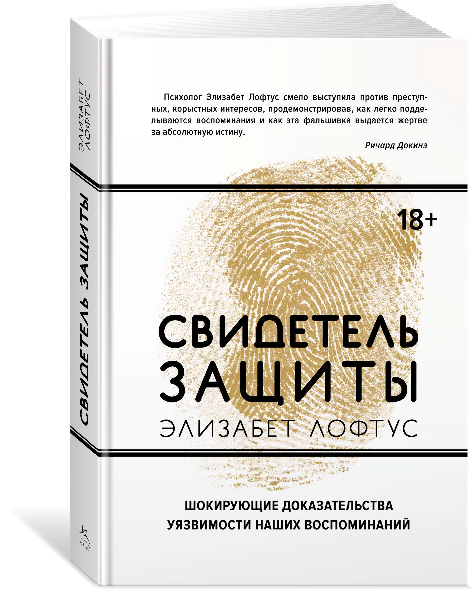
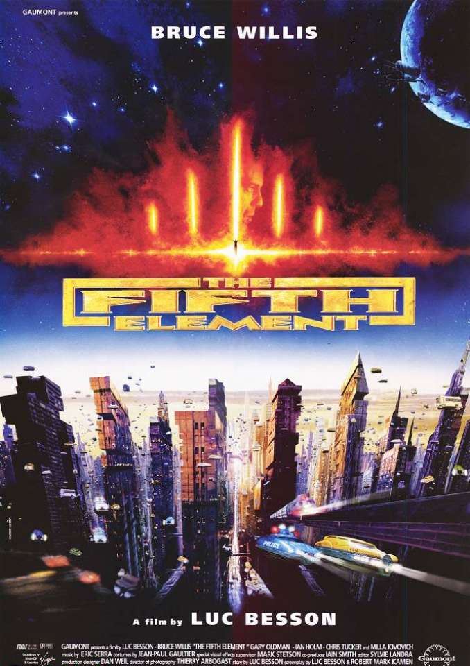
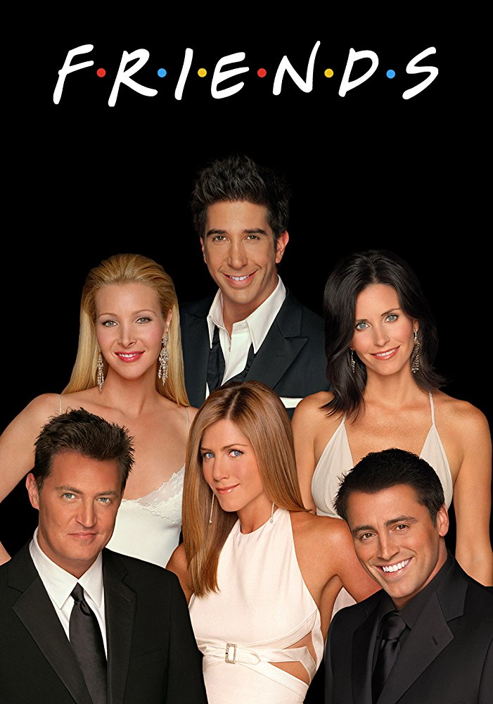
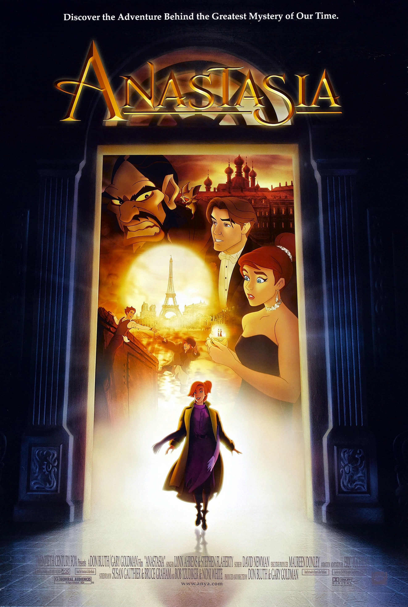

Мое фото
Пару предложений обо мне
Мне 27 лет, живу в Минске. Работаю в банковской сфере, разрабатываю продукты для клиентов и стараюсь сделать их жизнь лучше.
Я очень люблю читать, делаю это везде, где угодно: в транспорте, в обед на работе, дома перед сном. Еще не представляю свою жизнь без музыки.
Также интересуюсь спасением планеты от мусора и экологией в целом. Стараюсь вносить в свою жизнь экологические привычки: сортировка мусора, отказ от пластиковых пакетов и других одноразовых вещей.
Почему я пошла на эти курсы?
Пару лет назаж я поймала себя на мысли, что меня интересуют сайты. Потом я поняла, что хочу их создавать. Так записалась на курсы web-дизайна. И вот, уже в июле 2020 я нарисовала свой первый макет и получила сертификат UX-UI designer. Потом я решила пойти дальше и с марта по июль 2021 года изучала в Codegirl School HTML и CSS. А теперь вот я снова с вами погружаюсь в JavaScript.
Мои любимые книги
Как мы тут выяснили я люблю читать.
Поделюсь топ-3 из последних:
-
Прислуга. Кэтрин Стокетт«Прислуга» — потрясающе теплый, человечный и драматичный роман, ставший одним из главных литературных событий последнего года не только в США, но и в мире. Книга переведена на 40 языков, американские читатели назвали ее «Книгой года», почти год роман возглавлял все американские списки бестселлеров.
-
Будет больно. Адам КейЧто вы знаете о враче, который вас лечит? Скорее всего, совсем немного. Если хотите узнать больше, скорее открывайте книгу Адама Кея. Это откровенный, местами грустный, а местами — уморительно смешной рассказ молодого доктора от начала его профессионального пути в медицине до завершения карьеры.
-
Свидетель защиты. Элизабет ЛофтусЭлизабет Лофтус, профессор психологии, одна из самых влиятельных современных исследователей, внесшая огромный вклад в понимание реконструктивной природы человеческой памяти, делится своими наблюдениями над тем, как работает память, собранными за долгие годы ее теоретической, экспериментальной и практической деятельности.
Мои любимые фильмы
Ну еще люблю смотреть фильмы, сериалы и даже мультфильмы.
Мой топ-3:
-
Пятый элемент (1997)Каждые пять тысяч лет открываются двери между измерениями и темные силы стремятся нарушить существующую гармонию. Каждые пять тысяч лет Вселенной нужен герой, способный противостоять этому злу. XXIII век. Нью-йоркский таксист Корбен Даллас должен решить глобальную задачу - спасение всего рода человеческого.
-
Друзья (1994-2004)Шестеро друзей – Рейчел, Моника, Фиби, Джоуи, Чендлер и Росс – живут по соседству, вместе убивают время, делятся секретами и иногда очень сильно влюбляются.
-
Анастасия (1997)Анастасия — дочка последнего русского царя Николая, погубленного зловещим Распутиным. Ей удается спастись, добраться вместе с бабушкой до переполненного вокзала и… потеряться в толпе. Проходит десять лет. Анастасия стала взрослой красавицей и теперь хочет попасть в Париж. Сможет ли царевна осуществить задуманное? Ведь Распутин уже поднялся из своей могилы…
Мои социальные сети
Я достаточно много времени провожу в социальных сетях. Думаю, что не меньше чем, пару часов в день.
Вот список, моих соц. сетей: